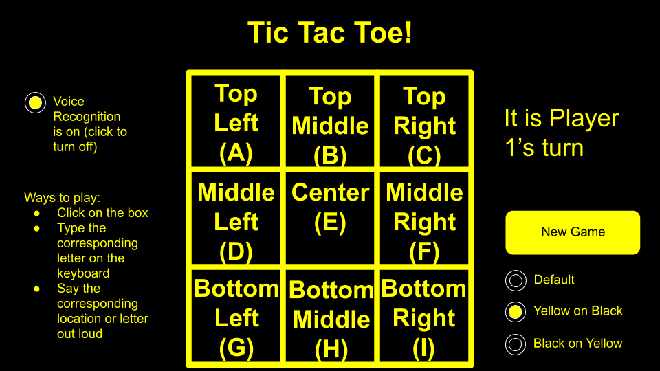

An accesible web application based off of the classic game tic tac toe. Users
have three modes of playing: with the mouse, the keyboard or voice control. Users also can change the size of the text and choose one
of 4 color schemes aimed to help those with visual impairments.
Duration:
7 weeks (10/27/20 - 12/15/20)
My Role:
UX Researcher & Designer
Teamates and other Responsibilities:
Justin - Javascript Developer
Isabel - Javascript Developer
Karam - Front End Developer
Tools for Collaboration:
Zoom
Imessage
Tools for Development:
Game - HTML/CSS, Javascript
UX Research - Google Slides, Google Forms
Hosted on Github Pages
Overview:
This was a project done for the class CSC 355: Human Computer Interaction at
The College of New Jersey. The class itself focused on accessibility and universal design.
The Problem:
How can we make games and web applications more accessible to everyone?
Preliminary Research
We decided to research different versions of well known games, specifically
tic tac toe. We were able to find a physical version of tic tac toe for people with visual impairments
but nothing comprehensive for an online or digital version.
Here is the link to the physical version we found
After discovering this we decided on making an version of tic tac toe for those with visual impairments that can be played on a computer.
Design Process:
First Iteration:
We decided we wanted multiple ways to play the game to allow the user to choose which mode works best for them. The three modes we decided were
using the mouse, they keyboard and voice activation.
Storyboarding:
From there I created storyboards, using google slides, to show how each mode would work and any
messages that would pop up.
Due to time constraints we had to start developping the game as soon as possible so we added and made changes to the game itself
instead of making mockups for user testing. At this point we had the following features implemented:
Mouse Controls
Keyboard Controls (number on keyboard corresponding to box on screen)
Voice Recognition (number corresponding to box on screen said out loud after pressing voice recognition button)
Landing page
Results shown on screen, current players turn shown at the bottom
Winner is displayed where player turn once was
First Iteration User Testing
I created a survey to get feedback on what we had so far after our first iteration of accessible tic tac toe.
The goal for this round of user testing was to get feedback on what he had,
catch any errors early on and to get suggestions from users on what to include
and do next. In total we had 18 people fill out the survey anonymously. You can see the
survey and the questions asked here.
I created a user journey map in order to analyze and show visually the feedback from the survey:
We also got feedback from someone who is visually impared, here are the suggestions she gave us:
Make sure to have a high contrast in colors, black background with white text
The game would be better overall if the text was larger
Second Iteration:
We decided to listen to the feedback from the
visually impaired user as the game is designed with those with visual impairments in mind. We also got a lot of feedbacl about frustration with
voice control and not knowing the keyboard was available to use. Here are the issues given in the feedback and the solutions we made based off of them:
Problem
Solution
❌ Not a high enough contrast in colors for those with visual impairments
✅ Add multiple color schemes for the user to choose from, the user can choose what works best for them
❌ Text is too small, makes it harder to read for people with visual impairments
✅ Add an option to change the text size, can make the text bigger or smaller based on user's preferences
❌ The voice control is frustrating and users were unaware that the keyboard was an option to play the game with
✅ Include intrustions near the gameboard that explains the features included in the web application
Simple Mockups:
Prior to implementing the color scheme changes ong the web application itself,
I made some basic mockups of what we wanted to include.

From here we implemented the color changing feautres along with changing the text size. Since other group members were working on
recognition and adding a "read the board" feature, I was the one to implement this part of the project. I made all of the different css files
along with a little bit of javascript to switch the files after clicking a button.
Here is what the different color schemes looked like:
Default Color Scheme
High Contrast
Yellow on Black
Black on Light Yellow
We also included a feature to increase the text size, at this point we ran
into an issue where the text would go behind the buttons when increased. This wou;d be fixed in the next iteration
Here is what the site looked like when the text was increased
We also implemented a "read the board feature where a syntehtic voice
would read the board from right to left stating where the x's and o's were"
User Feedback From Professor
Our group had a checkin with our professor on our progress. We had her test out the game and she gave us the following advice:
Work one the layout, it is slightly off centered
The read the board feature is a bit confusing, try to play around with other ways to read the board (ex. only read where the x's are or only read where the o's are)
The speed at which the syntehtic voice read the board was too fast
Third Iteration:
We decided to go through a third and final iteration of design due to feedback
from the professor and other technical issues we ran into during the second iteration (namely the text
going behind buttons when the size was increased)
Here are the changes we made based off the feedbacl we recieved:
Problem
Solution
❌ Read the board feature confusing
✅ Different options added for exaclty what information is read out loud: x locations, o locations and empty locations
❌ Synthetic voice spoke too fast
✅ Added buttons to speed up or slow down the synthetic voice based on user's preferences
❌ Text goes behind the buttons when increased
✅ Layout of the web aplication now adjusts as the text size increases, instructions also altered to be more understandable while taking up less space
❌ Fix the layout
✅ The game board was centered and buttons were grouped based on purpose to surround the board as opposed to a lot of buttons on the bottom of the screen
Third Iteration User Testing
I created a survey to get feedback on the third iteration of accessible tic tac toe.
The overall goal from this survey was to see if the changes made to the game improved
the overall experience since the prior round of user testing. It was also used to see if our goals
for the project overall were met and if we succeeded in making an accessible game. In total we had
25 people fill out the survey anonymously. You can see the survey and the questions
here.
I created a user journey map in order to analyze and show visually the feedback from the survey:
Results
The user journey is almost flipped from the previous one, where the beginning
is higher up and the later mechanics of the game become more frustrating
Responses for the layout and functionality of the game itself went up
Main issue people brought up was the voice recognition and the synthetic
voice narrating each move.
***Multiple people tested the game on mobile devices, which are incompatible with the Voice Recognition
API and therefore impacted the score.
Solution:
You can play the finished version of the game here
Landing Page
Can be played using mouse (as shown above), key board or voice recognition
Results shown on gameboard and current player's turn shown on bottom
After each cell is selected a synthetic voice reads what player selected the cell and which cell was selected
Ex. Synthetic voice would read "X selected call three"
Change Color Schemes
Change Text Size
Instructions
Instructions explain each way user can interact with the site to play the game along with how to use the voice recognition
Gives one example on how to use the game instead of being very repetitive like in the 2nd iteration of the game
Read the Board
Reads each cell (1-9)
If cell is empty, it reads out the cell number
If cell is taken, it reads out either x or o depending on what is in the cell
Three other options for how to read the board: reads where the empty cells are, the x cells and the o cells
Also buttons to speed up or slow down the synthetic voice
Future Considerations
I think the project could use one more design iteration, it is nearly
there but there are a few things I still would like to work on before I think the project can be considered fully finished.
Read the board:
A couple of people wrote that this feature in
particular was frustrating, this was added in between the first user
testing and the final user testing. Had we tested this feature a bit
more I think my group and I would have been able to come up with
a more successful solution.
Change the Color Scheme:
The is a split second between
switching color schemes that the web application displays the page
without any css and there is a quick flash of white. It's a bit
jarring and takes away from the feature itself.
What I learned:
This project was my first introduction into universal design and accessible
technology. I particularly found it very interesting seeing how different colors affect
people with visual impairments. I also foudn it interesting to combine new technology,
such as voice control, with games people are already familar with in order to make them more accessible.